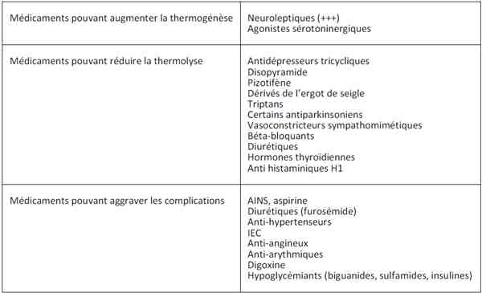
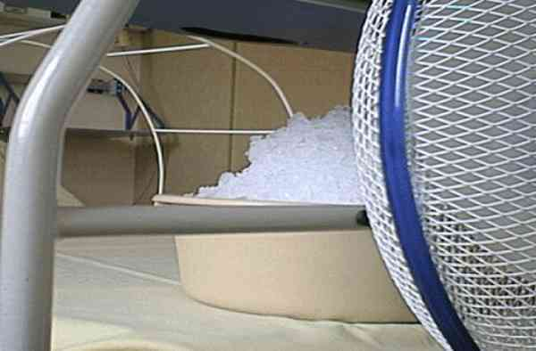
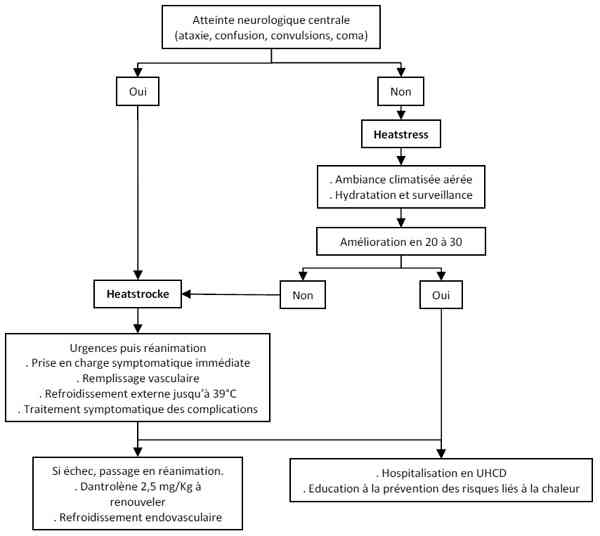

Bienvenue Sur Medical Education
Coup de chaleur d'exercice
Spécialité : pathologies circonstancielles / pédiatrie /
Points importants
- Coup de chaleur d'exercice = Hyperthermie maligne d'effort = Heatstroke
- Définition : Effort prolongé + T° > 40°C + Signes neurologiques
-
Complications :
- séquelles neurologiques graves
- état de choc multifactoriel
- rhabdomyolyse
- insuffisance hépatorénale
- CIVD
- défaillance multi viscérale
- Décès en l'absence de traitement précoce
- Traitement = refroidissement externe actif + remplissage vasculaire
- Refroidissement par pulvérisation d'eau tiède + évaporation par ventilateur + glace
- Immersion en eau glacée seulement si sujet jeune, sain, sportif entraîné, sans trouble de conscience et compliant
- Aucun intérêt du dantrolène et des antipyrétiques en 1ère intention
-
Principaux facteurs de mauvais pronostic :
- retard du traitement
- sous-estimation de la gravité
- Objectif : traiter tôt et efficacement d'emblée +++
-
Bilan étiologique chez le sujet et sa famille (implications génétiques)
Présentation clinique / CIMU
CONTEXTE
Terrain
- Sujet jeune, sportif et entraîné le plus souvent
- Sujet militaire avec fortes contraintes physiques (commandos, forces spéciales, légionnaire, marche forcée, course prolongée avec charge)
- Parfois « ancien sportif » reprenant brutalement une pratique d'endurance pour laquelle il est insuffisamment entraîné
Antécédents
- Sujet sain et sans ATCD le plus souvent
- Rarement notion d'ATCD du même type dans la famille ou chez le sujet lui-même
Facteurs de risque et comorbidités
- Fièvre pré-existante (état fébrile infectieux, fièvre inflammatoire, etc.)
- Déshydratation préalable (diarrhée profuses, vomissements, etc.)
- ATCD personnels ou familiaux de coup de chaleur d'exercice : participation génétique très probable (implication des HSP : Heat Stroke Proteins)
- Pas de lien démontré avec les ATCD d'hyperthermie maligne per-anesthésique
- Toxicomanie par substances adrénergiques ou autres, type cocaïne, ecstasy
- Obésité
- Hyperthyroïdie
- Insuffisance rénale chronique
- Insuffisance surrénalienne chronique
- Epilepsie
- Mucoviscidose
- Dermatoses exfoliantes
Facteurs favorisants
- Manque d'entraînement pour des efforts intenses et prolongés
- Manque d'acclimatation avant un effort en région chaude ± humide
- Absence d'hydratation suffisante et de protection thermique (casquette, brumisation...) avant et surtout pendant l'effort
- Privation de sommeil (décalage horaire lors d'épreuves à l'étranger)
- Consommation récente d'alcool ou de drogues (ecstasy, cocaïne +++)
Facteurs iatrogènes
 _263 Photo Coup de chaleur d'exercice : facteurs iatrogènes
Circonstances de survenue
- Contexte de compétition dans la pratique d'un sport avec efforts longs et soutenus (marathon, triathlon, enduro)
- Ambiance le plus souvent chaude et humide, mais pas nécessairement (accident pouvant tout à fait survenir en climat tempéré)
- Situation de dépassement volontaire de ses propres limites en raison de l'objectif (compétition sportive, épreuve sportive dans le contexte d'un concours ou d'un recrutement...).
SIGNES FONCTIONNELS
Généraux
-
Prodromes :
- baisse de performance en cours d'épreuve
- sensations de crampes, de chaleur intense, soif +++
- Epuisement musculaire et physique global contraignant à l'abandon
Neurologiques
- Règle d'or : tout symptôme neurologique peut se rencontrer au cours d'un coup de chaleur d'exercice +++
- Troubles sensoriels : hallucinations et troubles visuels divers, acouphènes, bourdonnement d'oreille
- Troubles du comportement, allant parfois jusqu'à une conduite totalement inadaptée de maintien de l'effort
- Vertiges, obnubilation, syndrome confusionnel
- Convulsions, voire état de mal épileptique
- Signes neurologiques focalisés possibles : troubles de la sensibilité, déficit moteur
- Troubles de la conscience pouvant aller jusqu'au coma
EXAMEN CLINIQUE
Signes généraux
- Température corporelle > 39°5 - 40°C
-
Signes majeurs de déshydratation :
- extracellulaire (sécheresse des muqueuses, yeux cernées, pli cutané...)
- et intracellulaire (soif intense)
Signes cutanés
- Initialement peau chaude et humide (tant que les capacités de sudation sont maintenues)
- Classiquement peau sèche et chaude au contact (signe tardif et de gravité)
Signes neurologiques
- Tout est possible !
Signes cardio-vasculaires
- Etat de choc (PA moyenne < 90 mmHg, tachycardie, oligo-anurie)
Signes respiratoires
- Tachypnée
- Hyperventilation (compensation de l'acidose lactique)
Dans les formes graves
- Convulsion, coma
- Hémorragies extériorisées (CIVD)
- Troubles du rythme cardiaque graves secondaires à l'hyperkaliémie (TV, FV...)
EXAMENS PARACLINIQUES SIMPLES
Contrôle immédiat de la glycémie capillaire
- L'hypoglycémie d'effort est un diagnostic différentiel à évoquer systématiquement +++
ECG
- Recherche de SCA, de troubles du rythme, de signes évocateurs d'une hyperkaliémie menaçante
CIMU
-
Tri 1 à 3 selon niveau de gravité
Signes paracliniques
BIOLOGIQUE
NFS
- Syndrome d'hémoconcentration (élévation de l'hématocrite, fausse polyglobulie)
- Sepsis sévère (hyperleucocytose)
Ionogramme sanguin
- Syndrome d'hémoconcentration (hyperprotidémie, hypernatrémie)
- Elévation de la créatininémie (insuffisance rénale aiguë multifactorielle : état de choc, rhabdomyolyse...)
- Hyperkaliémie (insuffisance rénale, rhabdomyolyse d'effort)
Hyperphosphatémie
Lactacidémie
- Elévation des lactates (acidose lactique par effort anaérobie + état de choc et souffrances tissulaires diffuses), signe de gravité majeure
Gaz du sang artériels
- Acidose métabolique lactique ± compensée
Bilan d'hémostase
- TP, TCK, Facteur V, plaquettes, fibrinogène (coagulopathie de consommation)
Enzymes et protéines musculaires
- CPK totales, aldolase, myoglobine (rhabdomyolyse constante)
Enzymes myocardiques, troponinémie
- Insuffisance coronarienne aiguë secondaire au choc (élévation de la troponine Ic, myoglobine, CPK totales)
Bilan hépatique
- Hépatite aiguë cytolytique liée à l'état de choc (élévation des transaminases souvent > à 4 fois la normale)
Bilan pancréatique
- Pancréatite aiguë d'effort (élévation de la lipasémie et de l'amylasémie)
Bilan inflammatoire et infectieux
- VS, CRP, Procalcitonine (marqueurs pronostiques et évolutifs du sepsis)
- Prélèvements bactériologiques : 3 hémocultures aérobies + anaérobies, ECBU, ponction lombaire au moindre doute d'infection neuro-méningée
- Frottis goutte épaisse à la moindre suspicion de neuro-paludisme (sujets militaires ou provenant de l'étranger notamment)
Recherche de toxiques
- Alcoolémie
- Recherches d'amphétamines, cocaïne
-
Recherche de médicaments potentiellement favorisants selon le contexte :
- antidépresseurs tricycliques, etc.
IMAGERIE
Imagerie radiologique guidée selon le contexte clinique
- Radiographie du thorax (bilan infectieux : pneumopathie ?)
- TDM ou IRM cérébrale en cas de coma, de signes de focalisation
- TDM abdominale si tableau péritonéal, etc.
EEG à discuter si état de mal épileptique ne cédant pas au traitement usuel
Diagnostic différentiel
De l'hyperthermie
- Coup de chaleur d'exposition, sans effort (canicule)
- Fièvre d'origine infectieuse : choc septique, purpura fulminans
- Fièvre inflammatoire
- Hyperthermie iatrogène (syndrome malin des neuroleptiques, etc.)
- Intoxication aiguë à la cocaïne, ecstasy, amphétamines, etc.
- Insuffisance surrénalienne aiguë
- Phéochromocytome
- Crise aiguë thyréotoxique (mais fièvre rarement aussi élevée)
Des troubles neurologiques
- Infections neuro-méningées, neuro-paludisme
- Hypoglycémie d'effort +++
- Hémorragie méningée en cours d'effort
- AVC
- Crise convulsive hyperthermique en contexte infectieux
- Syndrome confusionnel en contexte infectieux
-
Delirium tremens
Traitement
TRAITEMENT PREHOSPITALIER / INTRAHOSPITALIER
Stabilisation initiale
-
Refroidissement :
-
en préhospitalier : début du refroidissement et protection thermique :
- arrêt de l'effort physique en cours et repos total (allongé)
- placer le sujet dans un endroit sec, frais et à l'ombre
- déshabillage
- classiquement, immersion en eau très froide (1 à 2°C) dès que possible (technique actuellement controversée car risquée et sans bénéfice comparativement aux techniques moins agressives)
- l'immersion en eau « tempérée » environ 5° à 10°C sous la température corporelle est suffisante dans un premier temps
- à défaut d'immersion, asperger longuement le corps nu avec de l'eau tiède (15 à 20°C) tout en provoquant un courant de convection d'air : idéalement ventilateur, à défaut éventails de fortune
-
aux urgences : refroidissement avec objectif de retour rapide à une température corporelle < 39°C : refroidissement externe +++
-  _264 Photo Refroidissement externe
- technique simple, rapide à mettre en oeuvre et utilisable chez le patient perfusé, monitoré, voire intubé
- tunnel réfrigérant associant un courant d'air provoqué par un ventilateur au pied du lit propulsant l'air sous un tunnel composé de draps et d'arceaux de lits orthopédiques
- air refroidi par un bac de glace pilée devant le ventilateur
- peau régulièrement mouillée par brumisation d'eau fraîche ou apposition de linges humides
- pose de pains de glaces (interposer un linge humide) au niveau des plis inguinaux et aisselles
- immersion envisageable seulement si l'état de conscience et la mise en condition du patient le permettent
- nombreuses techniques de refroidissement internes décrites
-
en préhospitalier : début du refroidissement et protection thermique :
-
Réanimation symptomatique type ABCDE :
-
A+B/Airway + Breathing :
- contrôle de la liberté des VAS
- oxygénothérapie au masque haute concentration à débit suffisant pour obtenir une SpO2 > 95 %
- si coma, induction à séquence rapide et ventilation mécanique
-
C / Circulation : Stabilisation hémodynamique :
- poser 2 voies veineuses de gros calibre
- remplissage vasculaire de 1 à 2 L la 1ère heure, à adapter selon la réponse hémodynamique (objectif de normalisation rapide de la PA)
- soluté : NaCl 0,9% en 1ère intention, si possible à 15 - 20°C
- si collapsus sévère d'emblée ou correction insuffisante avec les cristalloïdes, recours aux solutés macromoléculaires (HEA) à haut débit dépasser 1500 mL
- recours aux médicaments vasopresseurs uniquement en cas d'échec d'une expansion volémique bien conduite : noradrénaline IVSE en débutant à 0,1 - 0,2 µg/kg/min puis adapter par paliers de 0,1 µg/kg/min
-
D / Disabilities and Drugs : autres médicaments :
- dantrolène : pas d'indication démontrée en 1ère intention (mécanisme différent de l'hyperthermie maligne per-anesthésique). Utilisable uniquement en cas d'hyperthermie maligne réfractaire au refroidissement et support hémodynamique bien conduits. Dose initiale de 2,5 mg/kg IVL (en 5 min) puis compléter à 5 mg/kg IVL et poursuivre en cas d'efficacité par paliers de 1 mg/kg en IVL sans dépasser une dose totale de 10 mg/kg
- AINS et l'aspirine : pas d'intérêt démontré, risque majoré d'ulcère gastro-duodénal de stress et de coagulopathie de consommation
- paracétamol : très peu efficace et risque d'aggravation de l'hépatite cytolytique
-
A+B/Airway + Breathing :
Suivi du traitement
-
Adaptation du traitement en fonction des objectifs suivants :
- obtenir Température < 39 °C rapidement puis normalisation stable
- stabilisation hémodynamique : PAM 90 mmHg, FC 60 à 80 bpm, reprise de diurèse efficace
- disparition des troubles neurologiques
-
traitement symptomatique des complications
Surveillance
CLINIQUE
- Température corporelle centrale (objectif < 39°C) et cutanée (objectif 30 à 33°C)/h
- Hémodynamique : PA, FC, FR, diurèse (après sondage urinaire)/h
- Neurologique : état de conscience (score de Glasgow), convulsions
- Autres : hémorragies, couleur des urines (rhabdomyolyse)
PARACLINIQUE
- Monitorage non invasif : scope, SpO2, glycémies capillaires, hémoglobine capillaire
- Monitorage invasif de la PA si état de choc non contrôlé par le remplissage initial
- Bilan biologique précédemment décrit / 4 à 6 h selon évolution
-
Autres examens guidés par l'évolution clinique et biologique
Devenir / orientation
CRITERES D'ADMISSION
- Dans tous les cas, hospitalisation pour traitement et surveillance
- Admission aux urgences en SAUV ou directement en réanimation
CRITERES DE SORTIE
- Température corporelle stable < 37°5 C depuis plus de 24 h
- Hémodynamique normale et stable 24 h après arrêt du remplissage
- Bilan biologique normalisé : rhabdomyolyse, bilan rénal, ionogramme, bilan hépatique, hémostase
RECOMMANDATIONS DE SORTIE
Consignes hygiéno-diététiques pour éviter les récidives
- Entraînement sportif régulier
- Efforts à la mesure des capacités physiques du patient
- Acclimatation avant l'effort si zone chaude et humide
- Protection solaire et thermique en cours d'effort (casquette, tee-shirt manches longues « respirant », brumisation régulière de la peau nue)
- Hydratation suffisante avant, pendant et après l'effort
- Arrêt immédiat de l'effort dès l'apparition des prodromes
Exploration des membres de la famille en milieu spécialisé
- Prévenir ascendants, fratrie, descendants
-
Biopsies musculaires, étude génétique
Mécanisme / description
Physiopathologie de l'hyperthermie complexe associant
-
Hyperthermie « exogène », par perte de capacité de thermorégulation au cours de l'effort avec :
- d'une part augmentation de la thermogénèse, liée à l'effort
- d'autre part réduction de la thermolyse : réduction des pertes thermiques cutanées (radiation, sudation - évaporation, convection, conduction) et respiratoires (air chaud saturé en eau)
- Hyperthermie « endogène » dans un second temps avec, fièvre liée aux mécanismes inflammatoires et secondairement au développement d'un véritable sepsis par translocation bactérienne à l'étage intestinal, puis cercle vicieux.
Evolution vers un authentique état de choc multifactoriel
- Choc distributif en raison de la vasodilatation périphérique en réponse à la chaleur (mécanisme vaso-réflexe thalamique)
- Choc hypovolémique en raison de la sudation profuse secondaire à cette même vasodilatation périphérique
- Choc septique secondaire à la bactériémie provoquée par la translocation bactérienne, secondaire à la vasoconstriction splanchnique
A terme et en l'absence de traitement, mécanisme auto-entretenu avec toutes les conséquences d'un état de choc prolongé
- Insuffisance rénale aiguë fonctionnelle puis lésionnelle
- Insuffisance hépatocellulaire aiguë hémodynamique
- Risque de coagulopathie de consommation, avec choc hémorragique secondaire venant aggraver les mécanismes de choc pré existants
- Insuffisance coronarienne aiguë, etc.
-
Décès dans un tableau de défaillance multiviscérale
Algorithme
- Algorithme coup de chaleur d’exercice
 _34 Algorithme Algorithme : coup de chaleur d'exercice
Bibliographie
-
Bouchama A, Cafege A, Devol EB, Labdi O, el-Assil K, Seraj M. Ineffectiveness of dantrolene sodium in the treatment of heatstroke.
-
-
-
-
-
-
-
-
-
-
-
-
Auteur(s) : Frédéric JOYE